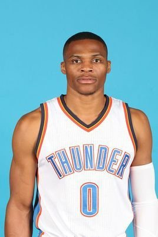

威少个人简介

职业生涯
2009年2月2日，在雷霆与国王的比赛中，威斯布鲁克获得生涯新高的22次罚球，并罚进20个，全场18投7中，砍下34分，并抢下6个篮板，送出8次助攻。
2009年3月3日，NBA官方公布2月最佳新秀人选，拉塞尔·威斯布鲁克获得西部最佳新秀。威斯布鲁克在2月的比赛中场均贡献20.6分、5.9次助攻和6.1个篮板的数据。
2009年3月3日，雷霆主场击败小牛，威斯布鲁克全场得到17分10篮板10助攻，在三双大师杰森·基德面前拿下职业生涯第一个三双。
2009年5月1日，NBA官方公布了2008-09赛季新秀最佳阵容，拉塞尔·威斯布鲁克入选最佳新秀阵容第一阵容。
2010-2012赛季
2010年1月28日，NBA官方公布参加2010全明星新秀挑战赛的18人大名单，拉塞尔·威斯布鲁克入选二年级队。
2010年2月22日，在雷霆与森林狼的比赛中，威斯布鲁克得到22分10篮板14助攻的三双数据[4]。
2010年4月5日，在雷霆与森林狼的比赛中，威斯布鲁克送出生涯新高的16次助攻。
2010年11月23日，拉塞尔·威斯布鲁克以场均23分、7.8次助攻和3.5个篮板，带领球队取得4连胜，赛季首获西部周最佳球员。
2010年11月27日，在雷霆战胜步行者的比赛中，威斯布鲁克全场24投13中、罚球18中17，砍下职业生涯新高的43分，外加8个篮板、8次助攻和3次抢断[5]。
2010年12月7日，威斯布鲁克以场均25.5分、10.0次助攻、7.5个篮板和3.0次抢断的成绩再度获得西部周最佳球员。
2011年1月1日，在雷霆与老鹰的元旦大战中，威斯布鲁克全场得到23分10板10助攻的三双数据。
2011年1月14日，在雷霆战胜魔术的比赛中，威斯布鲁克全场砍下32分10板10助攻，职业生涯首次获得30+10+10的数据。
2011年1月29日，在雷霆和奇才的双加时大战中，威斯布鲁克得到35分13板13助攻的三双数据，并帮助球队战胜对手。
2011年2月4日，NBA官网正式公布了2011年全明星赛的东西部替补球员名单，拉塞尔·威斯布鲁克生涯首次入选全明星赛。
2011年5月10日，在雷霆经过三个加时战胜灰熊的比赛中，威斯布鲁克砍下40分5篮板5助攻，帮助球队将系列赛比分扳成2-2平。
2011年5月16日，在雷霆战胜灰熊的比赛中，威斯布鲁克季后赛生涯首送三双砍14+10+14，填补了近19年内抢七大战没有人获得过三双的记录，而这次三双也将雷霆带入西部决赛。
2013年1月25日，NBA官方公布了全明星东西部替补阵容名单，拉塞尔·威斯布鲁克入选西部替补阵容。
2013年3月31日，在雷霆战胜雄鹿的比赛中，威斯布鲁克得到23分13篮板10助攻的三双数据。
2013年4月27日，雷霆控卫威斯布鲁克将进行手术，修复右膝撕裂的半月板。威斯布鲁克是在与火箭队的第二场比赛中受伤的。
2013年5月24日，NBA官方公布2012-13赛季最佳阵容名单，威斯布鲁克入选最佳阵容第二阵容。
2013年10月1日，雷霆后卫拉塞尔·威斯布鲁克再次接受了关节镜手术，将缺席常规赛前4到6周的比赛，威斯布鲁克在2013年5月首次接受右膝手术。
2013年12月26日，在雷霆与尼克斯的圣诞大战中，威斯布鲁克得到14分13篮板10助攻的三双数据。
2013年12月29日，雷霆队宣布球队当家控卫拉塞尔·威斯布鲁克已第三次接受右膝膝盖手术，预计至少伤停7周时间。
2014年3月5日，在雷霆战胜76人的比赛中，威斯布鲁克仅用20分钟就得到13分10篮板14助攻，完成职业生涯第8次三双，并成为联盟历史上获得三双用时第二短的球员。
2014年4月30日，在雷霆与灰熊的季后赛中，威斯布鲁克得到30分10篮板13助攻的三双数据。
2014年5月4日，在雷霆与灰熊的季后赛抢七比赛中，威斯布鲁克得到27分10篮板16助攻的三双数据，帮助球队在主场以120：109击败对手，成功晋级西部半决赛。
2014年5月8日，在雷霆战胜快船的季后赛中，威斯布鲁克得到31分、10个篮板和10次助攻的三双数据，这是他在2013-14赛季的季后赛获得的第3次三双。
2014年5月28日，在雷霆与马刺的西部决赛第四场比赛中，威斯布鲁克得到40分、10个助攻和5个篮板5次抢断，帮助球队以105∶92战胜对手，将总比分扳成2∶2平。威斯布鲁克成为继1989年的迈克尔·乔丹之后，首位在季后赛中单场完成至少40分、10次助攻和5次抢断的球员。
2014年7月17日，在ESPY年度颁奖庆典上，来自雷霆的后卫拉塞尔·威斯布鲁克获得了年度最佳复出运动员奖。
早年经历
高中时期
在卢金格（Leuzinger）高中，高
拉塞尔·威斯布鲁克
拉塞尔·威斯布鲁克
三时拉塞尔·威斯布鲁克带领球队创造了25胜4负的历史纪录，并打入卢金格高中所在的加利福尼亚州校际联盟南部地区第一区（CIF-SSDiv.1）AA级锦标赛的半决赛。威斯布鲁克平均每场得到25.1分、8.7个篮板、3.1次抢断和2.3次助攻，共投入了57个三分球，罚球命中率为76.0%，拿到14次两双，得分超过30的比赛有8场，在2006年1月6日对阵卡尔森（Carson）高中时得到高中生涯最高的51分。
高中毕业前，UCLA的本·霍华德注意到了威斯布鲁克，给他提供了一份奖学金并邀请他进入为加州大学洛杉矶分校棕熊队效力。
大学时期
2007年大二时，拉塞尔·威斯布鲁克效力的UCLA棕熊队打入NCAA最后四强，在半决赛66比76输给佛罗里达大学。2008年棕熊队又打入了最后四强，但是63比78输给孟菲斯大学。大二时威斯布鲁克获得了太平洋十联盟的年度最佳防守球员，入选太平洋十联盟第三阵容和联盟最佳防守阵容。威斯布鲁克保持着校史上大二球员的最长上场时间纪录（1318分钟）。